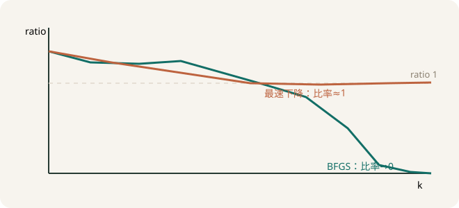

6.4.2 BFGS 的超线性收敛：Dennis–Moré 条件
6.4.1 只保证 lim inf‖gₖ‖=0。超线性收敛是更强的局部结论：误差比率 eₖ₊₁/eₖ→0。它成立的充要条件是近似矩阵沿步方向逼近 Hessian——即 Dennis–Moré 条件。
收敛速度的层次
设迭代点趋于 x*，误差 eₖ=xₖ−x*。几种常用的收敛速度：
线性：‖eₖ₊₁‖≤c‖eₖ‖，c∈(0,1)；超线性：‖eₖ₊₁‖/‖eₖ‖→0；二次：‖eₖ₊₁‖≤K‖eₖ‖²。牛顿法在非退化解附近是二次的；拟牛顿法一般只能承诺超线性。
超线性意味着误差比率越来越小，但不保证固定阶数。它是拟牛顿法能达到的自然目标：单靠秩二更新拼不出牛顿法那样的局部二阶信息完全准确度，但能让比率趋于零。
Dennis–Moré 条件
超线性收敛的充要条件与“近似矩阵沿步方向逼近真实 Hessian”有关。若线搜索满足步长趋于零且方向合理，则
是超线性收敛的充分必要条件（在原书的超线性收敛定理中给出）。直观上，它说模型在最新一步方向上越来越像真实 Hessian。仅要求 Bₖ→∇²f(x*) 是充分但非必要的：梯度差只提供了沿 sₖ 一个方向的信息，因此只在这一方向上的误差需要消失。
这个条件把“算法是否快”归约成“割线信息是否累积得足够好”。布罗伊登族的不同更新、不同参数选择，区别就在逼近这个条件的速度。
BFGS 的超线性收敛
BFGS 能否达到超线性？原书的结论是：在适当的假设下（f 在解附近严格凸且二阶连续可微、线搜索满足 Wolfe 条件、迭代收敛到解），BFGS 满足上述 Dennis–Moré 条件，因而超线性收敛。
证明需要两个要素：一是 6.4.1 的全局收敛骨架保证 ‖gₖ‖→0；二是 BFGS 更新的特殊结构使 ∑‖(Bₖ−∇²f(x*))sₖ‖/‖sₖ‖ 收敛，从而 Dennis–Moré 条件成立。并非任意满足割线方程的更新都有这个性质：BFGS 的保正定性与参数选取在其中起作用。
局限：超线性是局部结论。它只说当迭代已经靠近解时速度会加快，不排除前期很慢或发散（6.4.1 的全局部分才处理“不卡住”）。
数值证据
在二维 Rosenbrock 上从 x₀=(−1.2,1) 出发、用精确线搜索，记录误差 eₖ=‖xₖ−x*‖ 的比率 eₖ₊₁/eₖ：前几步比率在 0.5–1.0 之间徘徊（全局阶段），到末期急剧变小——后四步约为 0.013、0.010、0.0005、0.000。比率趋于零正是超线性的特征。
作为对比，同样起点与线搜索下的最速下降法在弯曲谷底里几乎停滞：比率长期停在 1.0 附近，连续 60 步才缓慢推进。这说明“同样能下降”不等于“同样快”；超线性来自 BFGS 对曲率信息的逐步学习。
这些都是二维教学算例，不是通用基准；用它们只能观察到趋势，不能代替定理。
半对数坐标下，线性收敛是直线，超线性收敛向下弯曲——误差比率本身在变小。

交互：两种方法的最后比率
拖动滑块改变起点 x 坐标，同时运行 BFGS 与最速下降（精确线搜索），显示两者在最后几步的误差比率。比较哪一个的比率明显变小。
实时比较
Python：观察误差比率趋于零
程序只依赖标准库，在 Rosenbrock 上跑 BFGS（精确线搜索），打印最后几步的误差比率。输出可见比率下降的趋势；这是一种数值现象，不能代替 Dennis–Moré 定理。
"""BFGS on Rosenbrock: print the final error ratios e_{k+1}/e_k."""
import math
def f(p):
return 100.0*(p[1]-p[0]**2)**2 + (1.0-p[0])**2
def grad(p):
return (-400.0*p[0]*(p[1]-p[0]**2) - 2.0*(1.0-p[0]), 200.0*(p[1]-p[0]**2))
def exact_search(x, p):
lo, hi = 0.0, 2.0
gr = (math.sqrt(5.0)-1.0)/2.0
c, d = hi-gr*(hi-lo), lo+gr*(hi-lo)
fc, fd = f((x[0]+c*p[0], x[1]+c*p[1])), f((x[0]+d*p[0], x[1]+d*p[1]))
for _ in range(80):
if fc < fd:
hi, d, fd = d, c, fc
c = hi-gr*(hi-lo); fc = f((x[0]+c*p[0], x[1]+c*p[1]))
else:
lo, c, fc = c, d, fd
d = lo+gr*(hi-lo); fd = f((x[0]+d*p[0], x[1]+d*p[1]))
return 0.5*(lo+hi)
def run(x0):
x = list(x0); H = [[1.0, 0.0], [0.0, 1.0]]
star = (1.0, 1.0)
def err(): return math.hypot(x[0]-star[0], x[1]-star[1])
ratios, prev = [], None
for it in range(20):
d = err()
if prev is not None and prev > 0:
ratios.append(d/prev)
prev = d
g = grad(x)
if math.hypot(*g) < 1e-10:
break
Hg = [H[0][0]*g[0]+H[0][1]*g[1], H[1][0]*g[0]+H[1][1]*g[1]]
p = [-Hg[0], -Hg[1]]; a = exact_search(x, p)
xn = [x[0]+a*p[0], x[1]+a*p[1]]; gn = grad(xn)
s = [xn[i]-x[i] for i in range(2)]; y = [gn[i]-g[i] for i in range(2)]
sy = s[0]*y[0]+s[1]*y[1]
if sy > 1e-12:
rho = 1.0/sy
Hy = [H[i][0]*y[0]+H[i][1]*y[1] for i in range(2)]
yHy = y[0]*Hy[0]+y[1]*Hy[1]
H = [[H[i][j]-rho*(s[i]*Hy[j]+Hy[i]*s[j])+rho*rho*yHy*s[i]*s[j]+rho*s[i]*s[j]
for j in range(2)] for i in range(2)]
x = xn
return ratios
if __name__ == "__main__":
ratios = run((-1.2, 1.0))
print("last ratios:", [round(r, 4) for r in ratios[-4:]])
assert ratios[-1] < 0.05 # final ratio is small: superlinear trend程序只用二维 Rosenbrock 与精确线搜索；比率的具体值依赖起点与线搜索，不是普适常数，也不验证定理的假设。